Case studyPT 49665Eco Business Park V, Bandar Puncak Alam, SelangorSheet 4 / 8
A single-storey factory with a two-storey office, shown from its building-plan drawings
Everything on this page was made from building-plan drawing set JPLKSB/49665-2026 (JUN 2026; submitted, not yet approved). It is our first showroom and our proof of method. PT 49665 is our founder's family property, not a paying client, and it is not offered for sale or rent through Idyra. The agency on its share page is fictional. Construction status: owner to confirm.
4,565 m²land area 1/9 · p01
2,616 m²gross floor area, factory and office: 28,158 sq ft, in the 25,001–80,000 sq ft band 1/9 · p01
44.8 mcolumn-free span; 5 big vehicle doors 2/9 · p02; 37 car bays 1/9 · p01
Figures as printed on the sheets, rounded to 1 m² and 0.1 m; the square-foot figure is converted from m². The references give the drawing sheet and page of the set.
Stills12 path-traced · 11 as-per-plan pairs
Each operation-ready view has its as-per-plan partner
Rendered with Cycles at 1920 × 1080. Use the switch under a still to see the same camera as per plan: the building, site and landscape as drawn, with no fit-out, cars or people.
Rendered from building-plan drawings · fit-out illustrativeDay exteriorOperation-ready: logistics
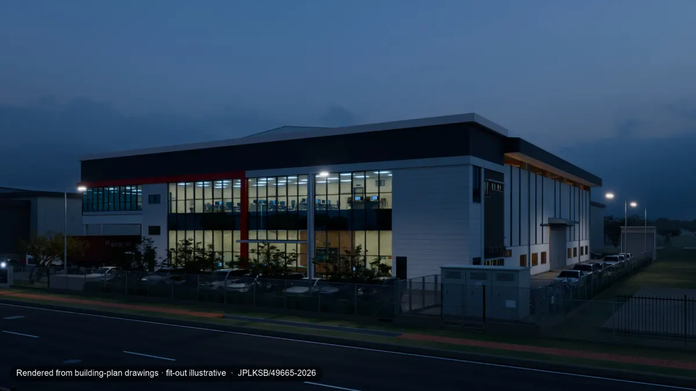
Rendered from building-plan drawings · fit-out illustrativeDusk exteriorOperation-ready: logistics
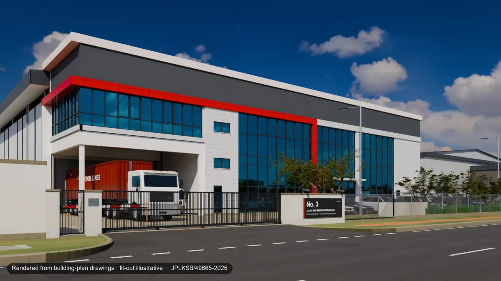
Rendered from building-plan drawings · fit-out illustrativeFrom the service roadOperation-ready: logistics
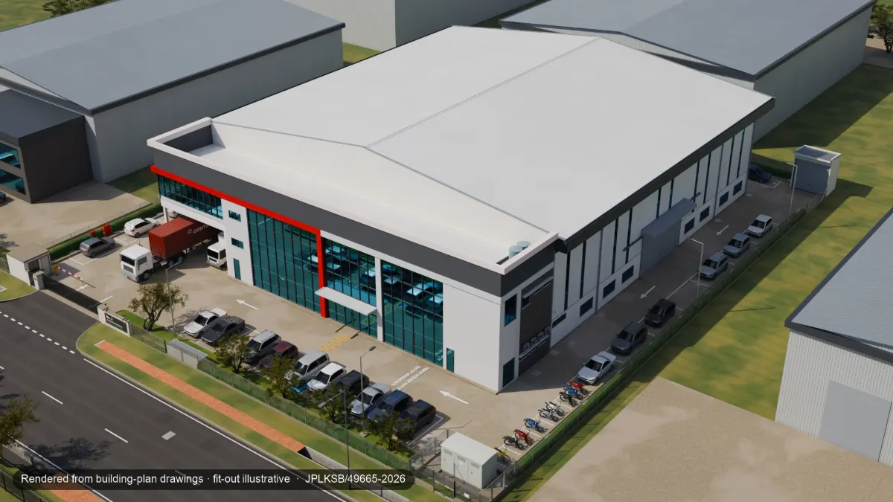
Rendered from building-plan drawings · fit-out illustrativeAerial over the lotOperation-ready: logistics
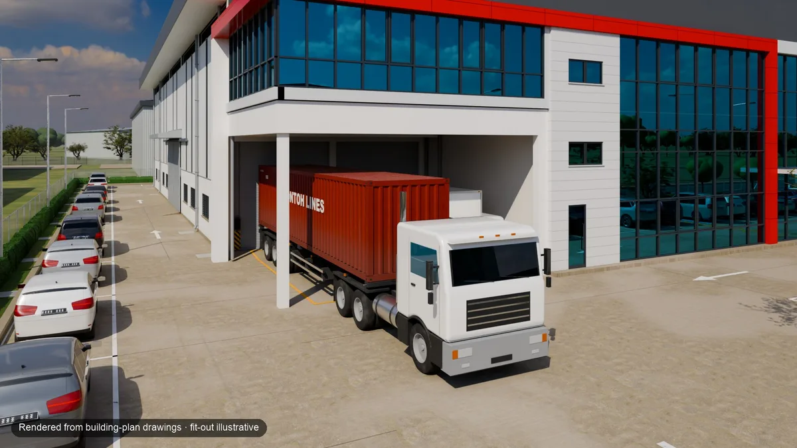
Rendered from building-plan drawings · fit-out illustrativeLoading bay with a 40-ft trailerOperation-ready: logistics
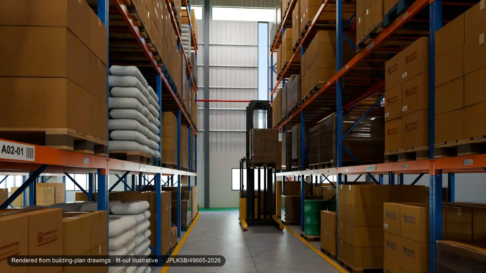
Rendered from building-plan drawings · fit-out illustrativeWarehouse aisleOperation-ready: logistics
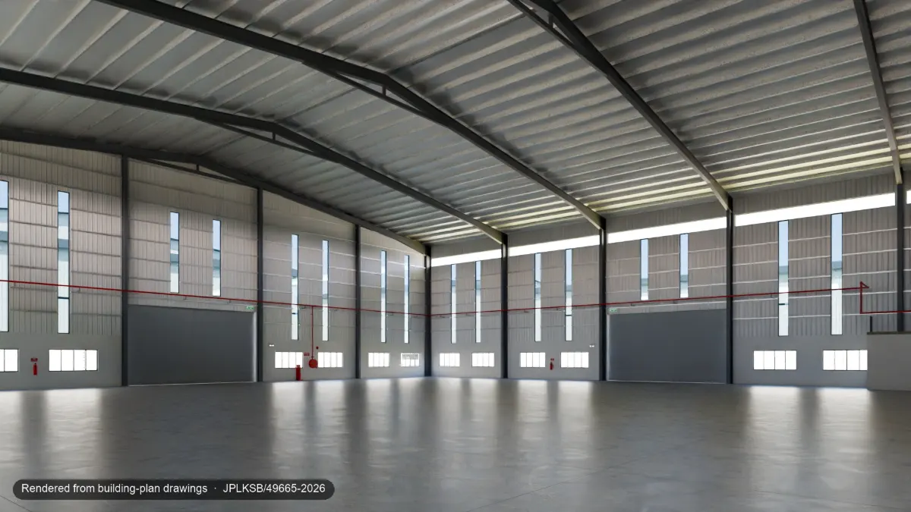
Rendered from building-plan drawingsFactory hall as per planAs per plan
Rendered from building-plan drawings · fit-out illustrativeLight-manufacturing floorOperation-ready: light manufacturing
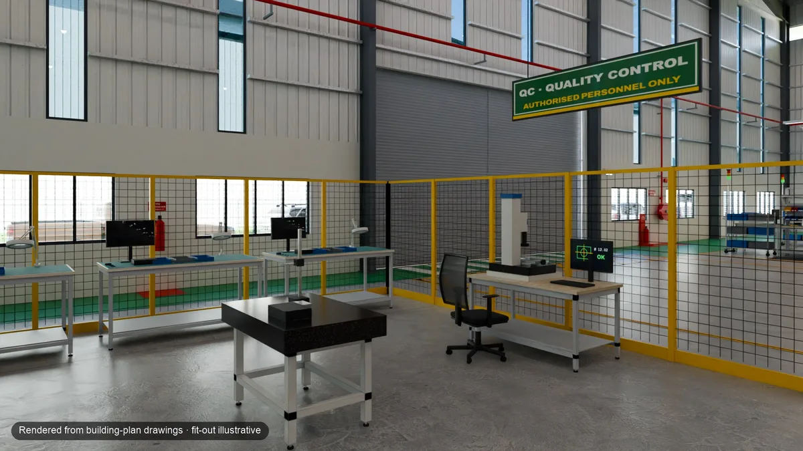
Rendered from building-plan drawings · fit-out illustrativeQC zoneOperation-ready: light manufacturing
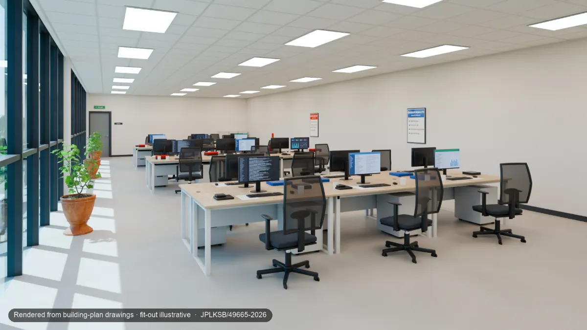
Rendered from building-plan drawings · fit-out illustrativeOpen officeOperation-ready: logistics
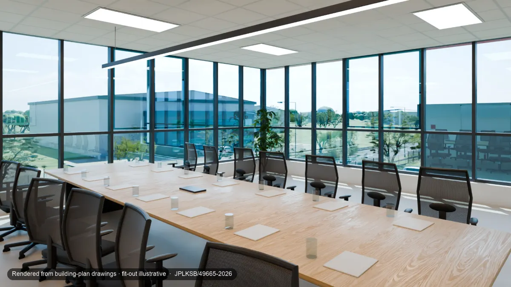
Rendered from building-plan drawings · fit-out illustrativeMeeting roomOperation-ready: logistics
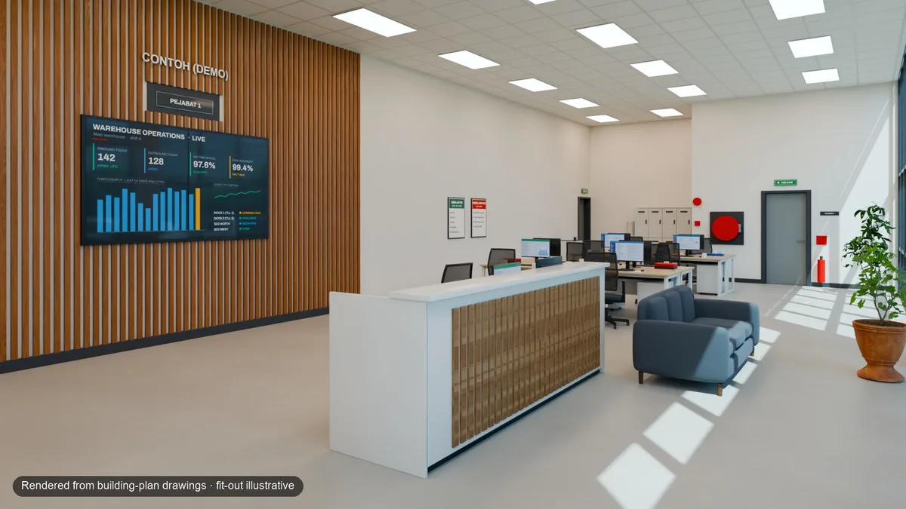
Rendered from building-plan drawings · fit-out illustrativeReceptionOperation-ready: logistics
The 40-ft trailer in the loading-bay view is there for illustration; trailer access and turning have not been checked (owner to confirm). Operation-ready views show illustrative uses only: whether a use is allowed depends on the land title and planning approval.
AI, inside masks only9 stills with people
People added by AI, and nothing else changed
An image model added people inside masks we drew around empty floor. Outside the mask, the composite matches the render pixel for pixel; our compositing step checks this before the label is added and the image is compressed for the web. We made this rule because all 20 of the model's raw outputs had repainted parts of the frame outside the mask.
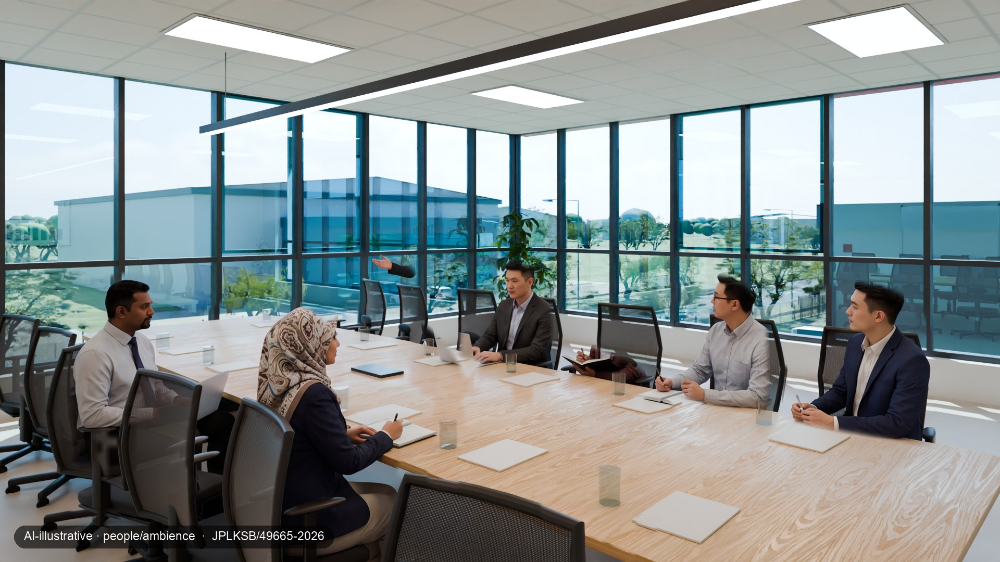
AI-illustrative · people/ambienceMeeting room, with AI peoplePeople generated inside masked floor areas; outside the masks the image is the render. They do not show real individuals.
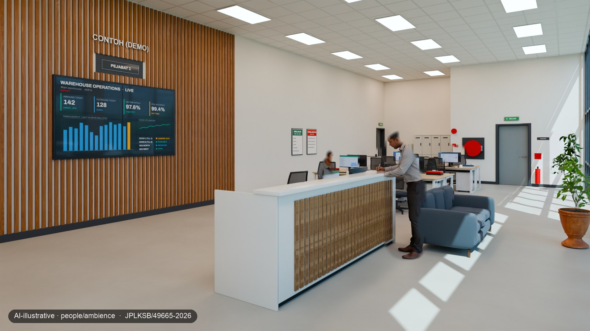
AI-illustrative · people/ambienceReception, with AI peoplePeople generated inside masked floor areas; outside the masks the image is the render. They do not show real individuals.
Film54 s master · 3 vertical cuts
A walkthrough with its labels burned in
Camera moves through the model, the as-per-plan wipe, two labelled AI-illustrative stills and a screen capture of the 3D view. No shot is AI-animated.
Walkthrough film54 s · No AI-animated shot: Cycles camera moves, stills and a screen capture of the interactive twin. People appear only in two labelled AI-illustrative stills.Rendered from building-plan drawings · fit-out illustrativeAI-illustrative · people/ambienceMeasured
Arrival: aerial and the road approach15 sRendered from building-plan drawings · fit-out illustrativeRacking and light manufacturing15 sRendered from building-plan drawings · fit-out illustrativeOffice, a meeting and the interactive twin15 sRendered from building-plan drawings · fit-out illustrativeAI-illustrative · people/ambienceMeasured
Walk-in 3D3 states · tap-to-measure
This isn't a video. You're in control.
The interactive to-scale model runs in the browser. Switch between as per plan, logistics and light manufacturing, walk inside, and tap two points to measure to 0.1 m. This is the interim model, without the path-traced lighting of the stills.
01 EXPLOREDrag to orbit; pinch or scroll to zoom.
02 SWITCHAs per plan, logistics or light manufacturing, each labelled.
03 STEP INSIDEWalk in or take the tour; tick Measure and tap two points.
The 3D model works better on a desktop; on a phone it can take 10–15 seconds to become interactive.
Rendered from building-plan drawings · fit-out illustrativeInterim to-scale model, built from building-plan drawings (submitted, not yet approved). Model, not as-built, not a survey. Fit-out, vehicles and people are illustrative. Not offered for sale or rent through Idyra.
Loads here · about 1.5 MB
In a simulated test (4G link, phone-sized screen, CPU slowed 4×, run on a Mac and not yet on a real phone), our newer web build starts painting in about 1.5 s, but its 3D becomes interactive only after 11–13 s. The interim model shown here has not been timed. Our target is a first view in under 5 s.
AccuracyModel against drawings
103 of 103 checks passed
A test harness drew 20 of the 101 dimensions at random and measured the same spans on the model: all 20 came within 0.1 m. The whole pool passed too: 101 dimensions within 0.1 m and 2 counts exact.
Flagged for a site visit
The drawings cannot settle these 5 items, so they are marked to verify on site:
the finished floor level as an absolute reduced level
the boundary stones
the road carriageway
the refuse chamber height, where the plan and the detail print different figures
the clear height under the roof-frame haunch
What the check found in our model
The harness caught two errors of ours, both fixed in the model: steel stanchions set 0.15 m inside the wall line instead of on their grid line, and the width of the water-meter compartment. The stills were rendered before the stanchion fix; the offset is not visible at their scale.
This check compares our model with the drawings it was built from. It is not a survey of the building, and the building may differ from its drawings.
Plan-checked by Idyra
Model geometry checked by Idyra against building-plan drawing set JPLKSB/49665-2026 (JUN 2026; submitted, not yet approved). Furnishing, equipment and people are illustrative (modelled or AI-visualised, as labelled). Not as-built, not a survey, and not a certification or approval by any authority, architect or engineer.
Deliverables
What the case study produced
Deliverable
Status
Notes
Path-traced stills
Done
12 at 1920 × 1080, 11 as-per-plan pairs, 9 AI-illustrative versions with people
Film
Done
54 s master and 3 vertical 15 s cuts, labels burned in
Walk-in 3D model
Partly done
3 labelled states and tap-to-measure work; baked lighting is still to come